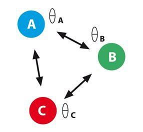
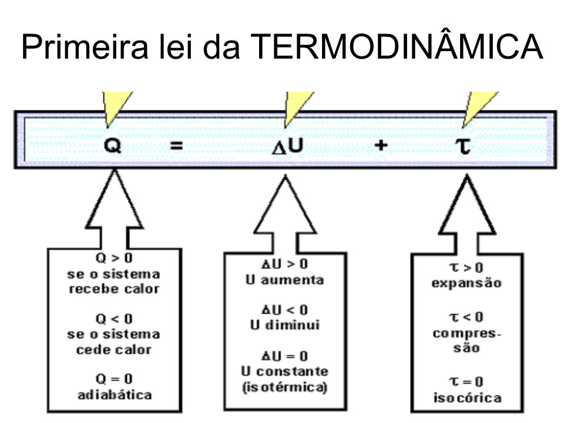

Dois sistemas em equilíbrio térmico com um terceiro estão em equilíbrio térmico entre si. Esta lei justifica o conceito de temperatura como sendo a propriedade que, sendo igual para dois sistemas, indica que estão em equilíbrio térmico
... Após colocar um termômetro em uma pessoa e deixar por determinado tempo, o dispositivo ira medir uma certa temperatura, ou seja, podemos concluir que o termômetro e o corpo do indivíduo estarão em equilíbrio térmico entre si, pois terão o mesmo valor numérico de temperatura.Se ocupa daquilo que é necessário para que o trabalho seja transformado em calor. Tem como fundamento o princípio da conservação de energia. Essa conservação de energia acontece sob as formas de calor e de trabalho.
... ΔU – será positivo, se a temperatura do sistema aumentar;A Segunda Lei da Termodinâmica trata da transferência de energia térmica. Isso quer dizer que ela indica as trocas de calor que têm tendência para igualar temperaturas diferentes (equilíbrio térmico), o que acontece de forma espontânea.